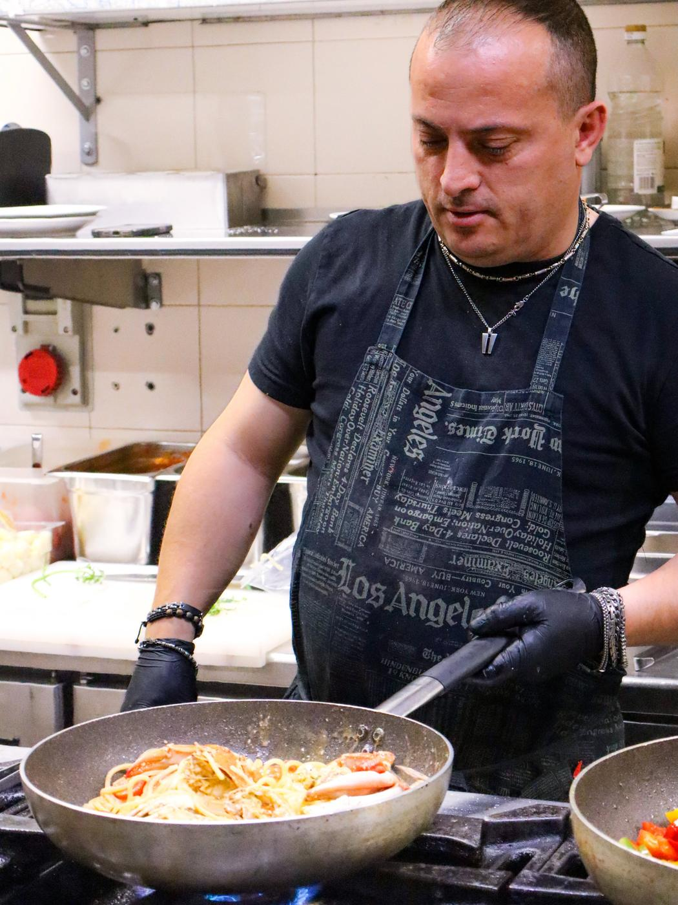
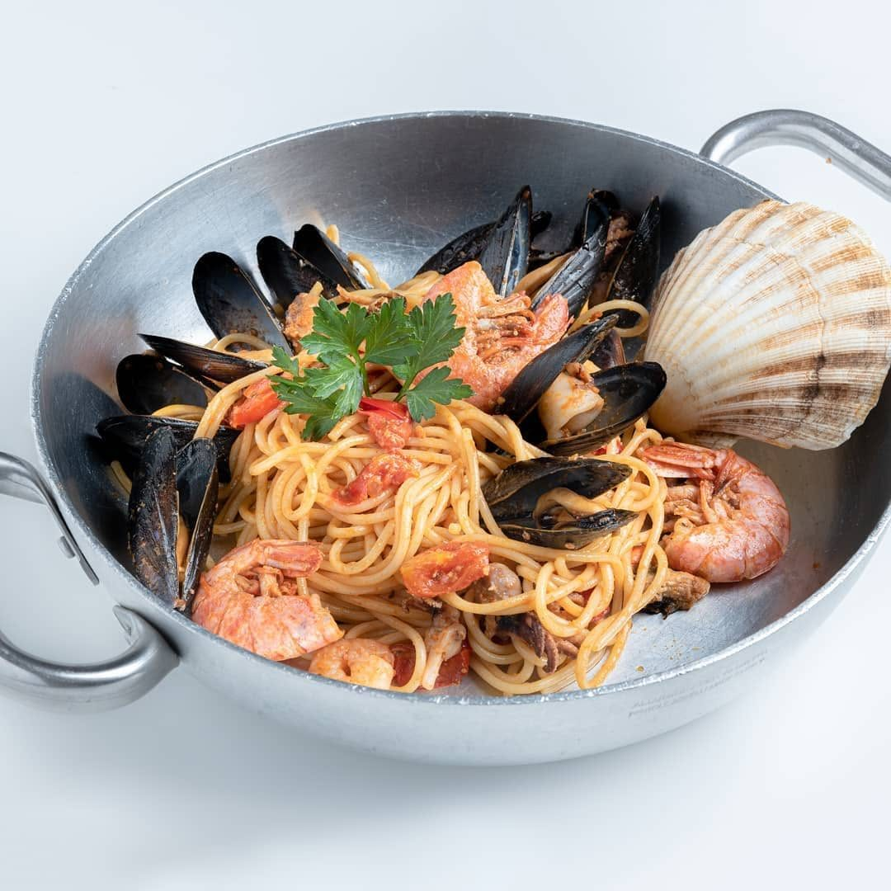
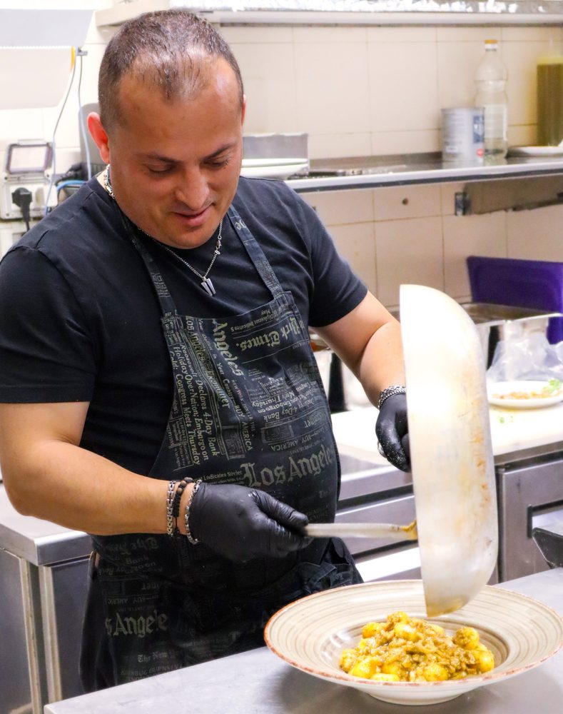
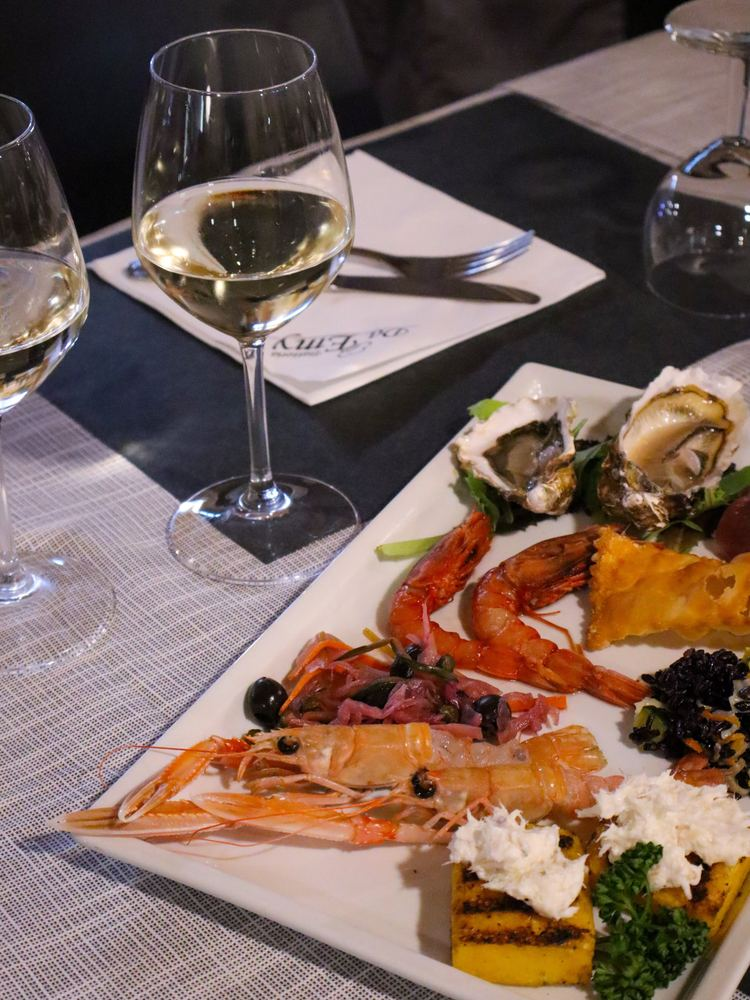
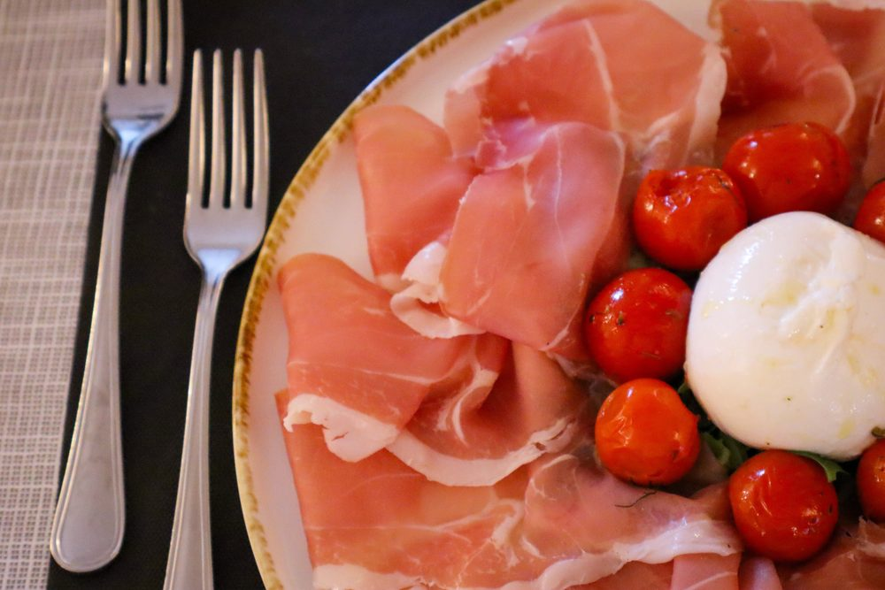
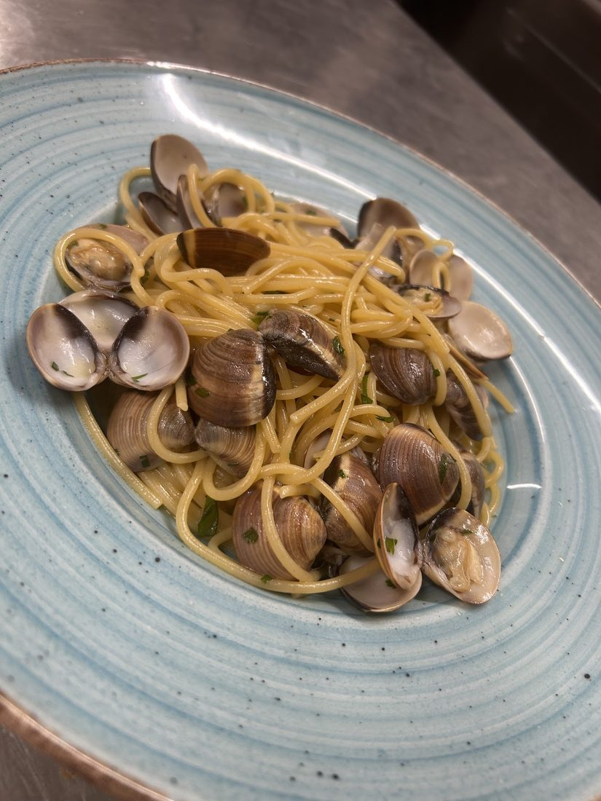
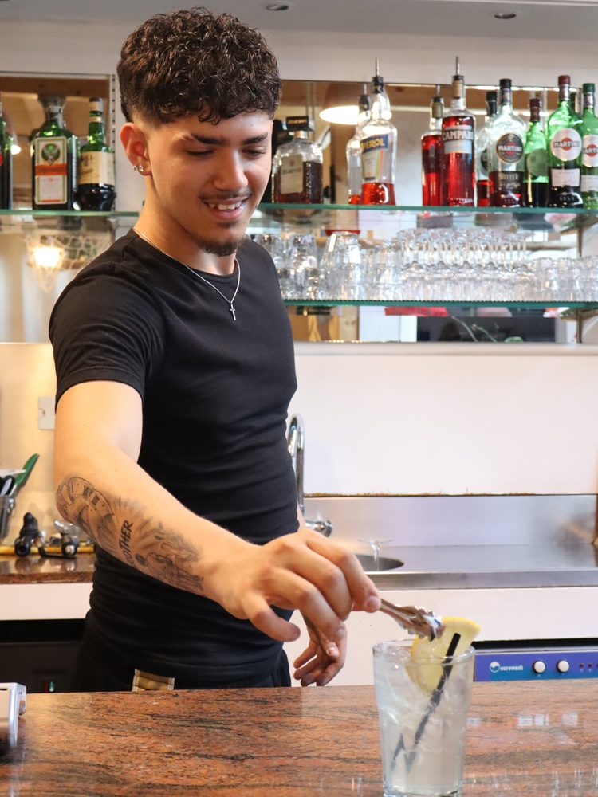
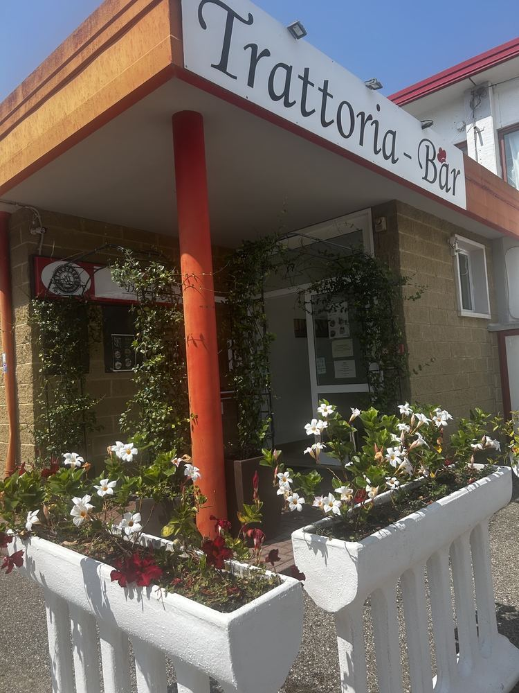

Orari: pranzo tutti i giorni, cena dal martedì al sabato
L'allegria è il nostro ingrediente segreto.
Siamo una trattoria con specialità di pesce fresco, in via Brigate Alpine a Dossobuono. Ti aspettiamo a pranzo tutti i giorni e a cena dal martedì al sabato; i nostri piatti li prepariamo anche da asporto.

Le sere della trattoria
Da martedì a venerdì: quattro sere, quattro sapori tutti da scoprire e gustare.
Per le sere conviene prenotare: 045 468 6197

Spaghetti allo scoglio, un classico senza tempo.
Tra le recensioni che ci lasciate su Google è il piatto nominato più spesso, e da noi il pesce è di casa.
Leggi le recensioni su GoogleNoi ci mettiamo il cuore, voi portate l'appetito.

Dalla padella al piatto. 
La brezza del mare e i prodotti di stagione, in un piatto. 
Bufala, crudo e pomodorini, per i giorni caldi. 
Spaghetti alle vongole, il mercoledì a pranzo. 
E per chiudere la cena, un cocktail al bancone. 
L'ingresso, in via Brigate Alpine 64.
Orari
Controlla gli orari qui sotto
| Lunedì | 12:00–14:30 | sera chiuso |
|---|---|---|
| Martedì | 12:00–14:30 | 19:00–22:30 |
| Mercoledì | 12:00–14:30 | 19:00–22:30 |
| Giovedì | 12:00–14:30 | 19:00–22:30 |
| Venerdì | 12:00–14:30 | 19:00–22:30 |
| Sabato | 12:00–14:30 | 19:00–22:30 |
| Domenica | 12:00–14:30 | sera chiuso |
Dove siamo
Via Brigate Alpine 6437069 Dossobuono, Villafranca di Verona (VR)
- Al tavolo o da asporto. Chiamaci e passa a ritirare: non facciamo consegne a domicilio.
- Eventi privati e aziendali. Raccontaci cosa hai in mente, al telefono o in trattoria.
- Accessibile in sedia a rotelle. Ingresso, bagno, parcheggio e tavoli.